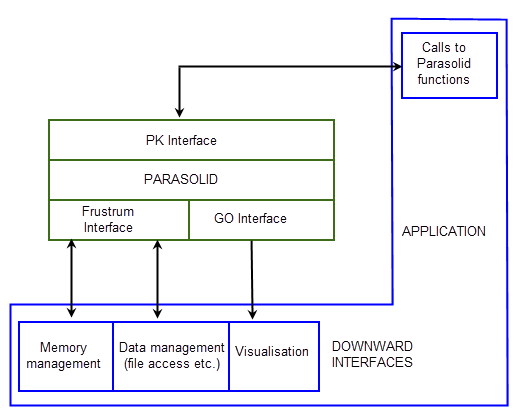

| |
Application Design And Architecture |
| <<< Introduction To Application Development | Chapters | Supplying A Frustrum >>> |
When integrating Parasolid into your product, some of the design decisions you need to make are constrained by the requirements of Parasolid itself. Your ultimate aim is to make calls to Parasolid routines from within your own application code in order to perform solid modeling operations. In order to do this, you need to supply code that ensures that your application and Parasolid can interact correctly. This chapter gives you an overview of the code you need to supply before you can start making calls to Parasolid routines from your own code.
Figure 5-1 shows how Parasolid interacts with a typical application:
Figure 5-1 How Parasolid interacts with a typical application
The code that you need to supply for integration with Parasolid falls into two categories:
Your application controls all interaction between Parasolid and the operating system. The parts of your application that deal with this are referred to generically as downward interfaces. You usually need to have two parts to your downward interface:
Because Parasolid itself makes calls to routines in these downward interfaces, they need to be registered with Parasolid before your application can call any Parasolid functions.
The frustrum is a suite of functions that deals with:
If your application needs to display models - whether by rendering them on screen, or printing them to a plotter or laser printer - you must provide GO functions for Parasolid to use.
Parasolid calls the GO functions whenever your application calls a Parasolid rendering function in order to draw one or more parts. The GO functions encapsulate the graphical information output by Parasolid, and pass it to a graphics library (that you also provide) in order to render the image.
You can write the graphics library yourself, or you can use a third party library such as OpenGL or DirectX.
Parasolid is supplied as a library of functions and is designed as a toolkit of component software that you can embed into your product. The Parasolid API is called the PK. The PK contains functions for:
See Chapter 9, “PK Interface Programming Concepts”, for an introduction to using functions in the PK.
Your application must be able to handle errors returned by PK functions. See Section 6.7, “Error handling”, for more details.
| <<< Introduction To Application Development | Chapters | Supplying A Frustrum >>> |